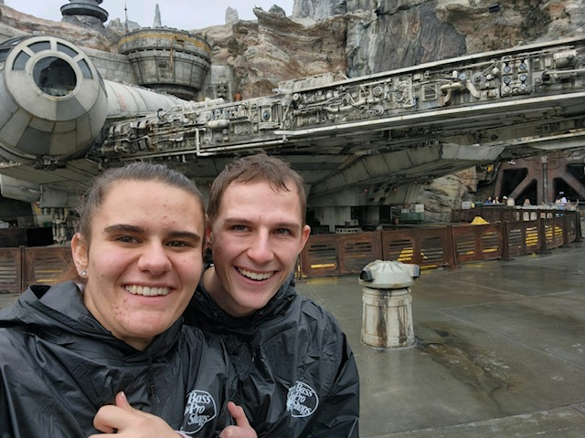

Austin's Website
Thomas Austin Barnes IV
Skills
Software Engineering Experience
Teacher Aid at BYU-I
As a teacher aid at BYU-I for Web Fundementals I worked with professors to grade students websites.
Along side that I worked with students who were struggling with their websites helping them problem solve.
Project Manager
I was chosen by my peers to be the manager of our team to build a video game, Code Catacombs.
About Me
Born and raised in Idaho Falls, Idaho Austin grew up in a family of seven. He was married in 2023 to his beautiful wife and enjoys spending time with her. He has always enjoyed playing and watching soccer, video games, and board games. Now he continues those activities along with writing and drawing. He enjoys building software ranging from websites to video games as well.